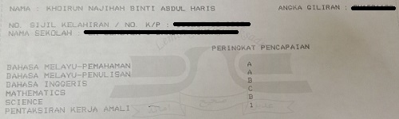
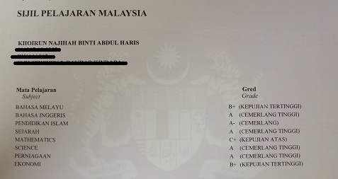
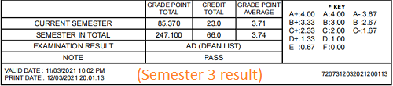

During my middle school years, I was shy and socially awkward and it affected my grades because I was scared to ask questions to my teachers. Therefore, a lot of times I choose to be ignorant because I was afraid to ask questions. For that reason, I never aced in any of my studies and I will always place in number 18 in my class. For my UPSR result, I only managed to get 2A’s only.  Moreover, due to my shyness, I never have friends. During recess breaks, I will go to the Library to read story books or I will just sit outside my class then doodle on my notebook. For some reason, there were some people who thought I’m weird.
Once I finished middle school, I was very determined to
make a change in my life because I realized that this will be my some of my final years going to schools therefore I want to make a best of it by having friends, going
to events, participate in curriculum and many more. The first thing I did
when I step in highschool was to apply for the Librarian position because
I feel like their duties are not as heavy as school prefects. Surprisingly, I
was accepted to be a Librarian. I manage to hold the responsibilities
from the beginning of highschool until the end with my green uniform
and I even had the opportunity to be promoted into Secretary in form 2
and Deputy Treasure in form 5.
However, I was still a bit left behind in my studies during form 1 and form
2 but it all changes during form 3. 15 year old Khoirun realized that I
should stop playing around and start focusing on my studies because I am
reaching adulthood and also my SPM year is approaching. Therefore, I
began to study hard and focused more in class. From there on, I manage
to consistently get first place in my class from form 3 until form 5.

All of my hard work paid off because I was awarded for getting first place in my final year exam and best subject in final year exam for business subject during form 4. Lastly,
for my SPM result, I managed to score 5 A's. Even though, I was not given the opportunity
to walk on stage to accept my SPM result but I was still proud of myself because all my hard work paid off.
Overall, I was very happy and satisfied with the accomplishments I
received during my high school years. I even manage to overcome my
shyness and become more confident. I am no longer afraid to ask questions
to my teachers.
After those great years during my high school years, I felt confident for
my university years. At first, I really want to pursue on psychology, as it was
my passion but due to the electives I took during high school, it was hard
for me to have the opportunity. I thought of applying a private universities
but it was too expensive. Therefore, I applied for UPU. Surprisingly, there
was an option for Psychology course so I put that as my first choice and
my second choice was Library Science in UiTM. When the
day the result came out, I was surprised, disappointed and indecisive
because I got Library Science instead of psychology while at the
same time I was not sure if I wanted to decline or accept the
offer because I felt like it would be a waste of opportunity. After all, it is
difficult to get into UiTM. After days of thinking, I accepted the offer.
On 20 July 2019, I said goodbye to my family and my first semester as a
Library Science students began. I was alone there in a state where I have
no close relatives or friends. I was the 3C's student : Class,
Cafeteria and Campus.Without a doubt, I was struggling
during my first semester. I still remember how I struggled when I got my
first assignment which is an article review. That was my first time reading
an academic materials, there were a lot of bombastic word that I do not
understand. Hence, I set up an appointment with my lecture and ask her
for help. Thankfully, the hard work paid off because I manage to get into
the Dean's list with 3.8 GPA for my first semester.
Due to the great result for my first semester, I step into my second semester
with confidence. I even promised myself to make friends and stop with the
3C's cycle. Sadly, the pandemic strikes and we
have no other choice to continue the second semester with online classes.
I am sure many can relate and understand how it was such a struggle to
do online classes. It was hard for me because I can no longer ask questions
directly to lectures and do group meetings with my groupmates. For this
the reason, it took a toll on my health. I was so stressed and pressured with
the assignments deadlines. My time management was also very bad.
Long story short, I am pursuing my last semester at home.
However, I manage to stay in the Dean's List for 2nd semester
and 3rd semester.

I really hope I can get into
Dean's List for my last semester and receive the Vice Chancellor award..
Some of the greatest opportunity I got to experience during first semester, it will be the
time I was apart of the faculty club which is ALiM (Association Library
Management). I was the Exco of WelFare for my first semester and 2nd
semester then on 3rd semester, I was promoted to become the vice president
of the club. I gained a lot of experience such as how to held an event,
and preparing event proposals. Also, I met a lot of great people there too. It is amazing
how we still manage to conduct a successful online program even during the pandemic such as “Sembang Santai Bersama Pihak Fakulti” where all students from Library management had a chat with the lecturers regarding their struggles and difficulties during these online classes. It felt as if the bond between the lecturers and the students became stronger.
All thanks to our club president, Muhammad Amirul.
There are also some more great memories that I managed to catch on
camera during semester 1. Click Here!